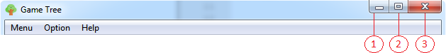

Сворачивание/закрытие приложения

Содержание
- Сворачивает приложение на панель задач
- Разворачивает приложение в полноэкранный режим
- Сворачивает приложение в системный трей
Для закрытия приложения можно восрользоваться либо основным меню, либо системным треем.